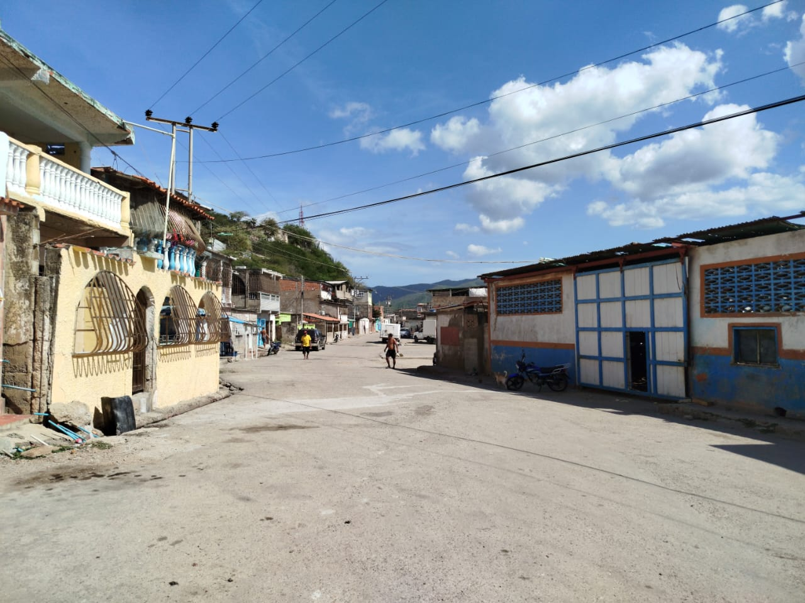
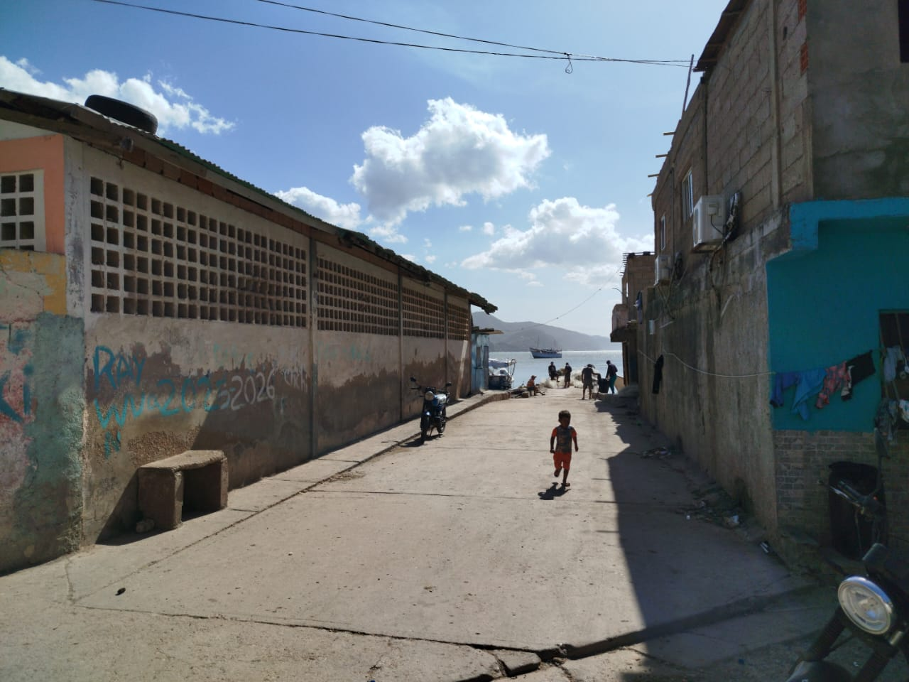
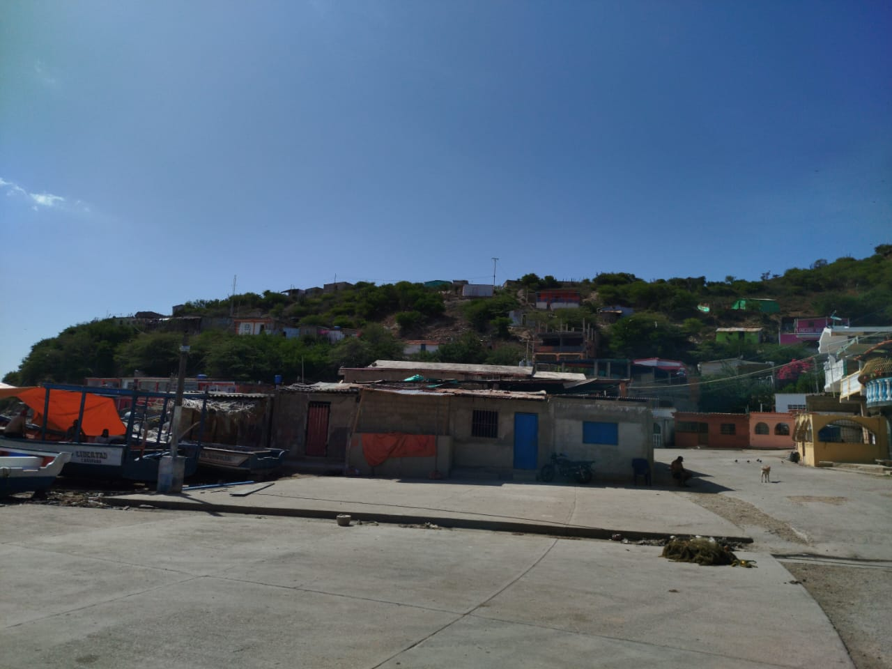
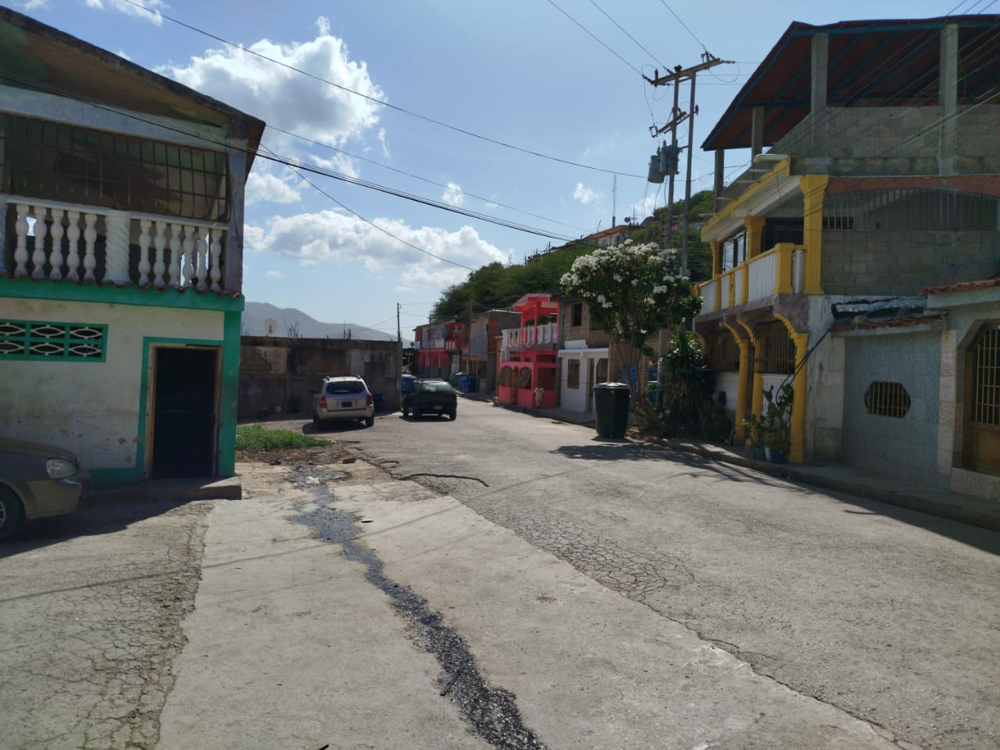

Este sector es uno de los más importantes dentro de la actividad pesquera de El Morro de Puerto Santo, siendo considerado un punto clave para el trabajo y la producción de la comunidad. Su cercanía con el mar y su infraestructura lo convierten en un espacio fundamental para el desarrollo de la pesca local. Durante la temporada de sardina, El Dique se llena de movimiento y actividad. Es común observar numerosas cavas y caravanas que llegan al sector para cargar y transportar el producto hacia distintas partes del país, reflejando la importancia económica de esta actividad para el pueblo. La constante presencia de pescadores, trabajadores y comerciantes hace de este sector un lugar lleno de dinamismo, donde se puede apreciar de cerca el esfuerzo y la tradición pesquera que caracteriza a la comunidad.



